TrainerKit Manual
Everything you need to get riding on iPhone, Apple Watch, Mac and Apple TV, then everything else.
Quick Start — iPhone
From install to riding in about five minutes. The iPhone is the one device that does everything: outdoor GPS rides, indoor rides with a smart trainer, the training plan, and the home your Watch rides land in.
Create your profile. On first launch choose Set Up Manually and enter your name, FTP, weight and units. If you already use TrainerKit on another device, choose Restore from iCloud instead and pick your profile; everything else follows it down. You can change any of this later from the avatar at the top of the Today tab.
Connect your services, or skip. The next screen offers Strava, Intervals.icu and Ride with GPS. Tap Skip for now if you just want to ride; the same buttons are in Profile → Connections whenever you want them.
Allow location. The first outdoor ride asks for location access. Choose While Using or Always; Always lets a ride keep recording with the phone locked in a pocket.
Pair a sensor only if you have one. Riding outdoors needs nothing paired: GPS gives speed and distance, and an Apple Watch wearing TrainerKit supplies heart rate on its own. For a power meter or trainer open the Ride tab, tap the sensor line (No Sensors Connected · Tap to connect), then Scan for Sensors and Connect. The pairing chapter below covers the rest.
Ride. Open the Ride tab and tap Start Ride. There is one button and no questions. Ride Outdoors starts a GPS ride; Ride Indoors appears once a trainer is connected. Swipe between the metric pages during the ride, tap the lap button for a lap, and use End when you are done.
Check the summary, then Done. The ride is already saved before you see this screen. The name and the ride type (Road, MTB, Gravel, Enduro, E-Bike) are filled in for you from where you rode and what you rode last time; change either with Change if they are wrong. Tap Done.
Send it onward. If Strava, Intervals.icu or Ride with GPS is connected and Auto Upload is on, the ride uploads itself; with Auto Upload off, you can still upload the ride manually. If none is connected, the summary shows Connect Strava in Settings; connect once, turn on Auto Upload, and every later ride goes up automatically. Rides also reach Apple Health if you allowed it.
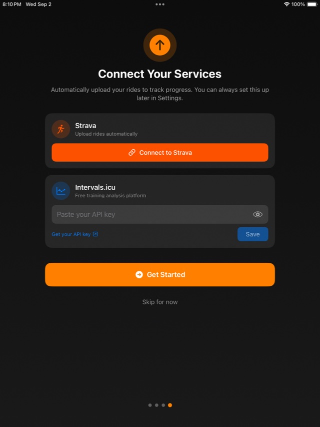
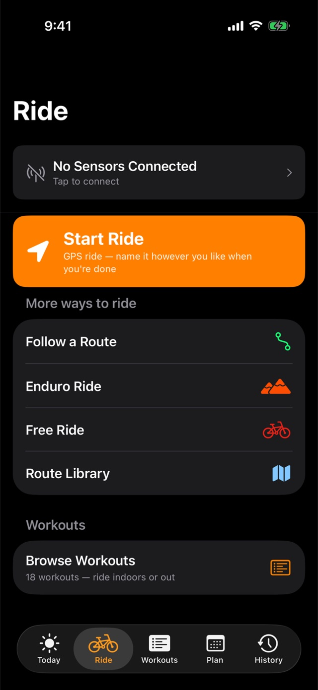
Where things live afterwards. Today shows the coach's suggestion for the day. Workouts holds the library and the builder. Plan is the four-week outlook. History is every ride, with export and upload from each one.
If something looks wrong. No GPS signal shows as a grey map and speed dashes for the first seconds; give it a moment outdoors. A sensor showing dashes instead of a number has stopped sending; the pairing chapter explains why and what to do.
Quick Start — Apple Watch
The Watch rides on its own, with GPS and whatever sensors watchOS has paired, and hands the finished ride to your iPhone. It also rides alongside the iPhone as its heart-rate source. You do not pair anything inside TrainerKit on the Watch; watchOS owns the sensors.
Install it. TrainerKit for Watch comes with the iPhone app. If it is not on your Watch, open the Watch app on the iPhone and install it from Available Apps. Open it once on the Watch so it can ask for permissions.
Allow location and Health. The first tap on a ride button asks for location; allow it and the ride you tapped starts on its own. Allow the Health access it asks for too: heart rate, and power, cadence and speed from paired sensors, all arrive through Health. If you ever decline location, the home screen points you to Settings → Privacy → Location Services → TrainerKit.
Pair sensors in watchOS, not in TrainerKit. On the Watch open Settings → Bluetooth → Health Equipment and tap your power meter or cadence sensor. The Sensors button in TrainerKit only reminds you of this; paired sensors work automatically when a ride starts. Heart rate comes from the Watch itself.
Close TrainerKit on the iPhone before a Watch-only ride. A power meter accepts one connection at a time. If the iPhone app is open with the meter connected, the Watch will not get it. The Watch home screen says the same thing.
Pick the ride. Ride is a GPS ride, Mountain Bike tags it as MTB, Enduro alternates liaison and stage laps for you, E-Bike records heart rate only, Workout runs a structured session synced from the iPhone. A 3-2-1 countdown starts the recording.
Ride. Swipe up and down between the pages: dashboard, power, laps, workout and map. On the dashboard, turn the Digital Crown to cycle through its data fields. A grey dash in place of a number means that sensor has not reported for a few seconds. Wet Mode locks the screen against rain; press and hold the Digital Crown to unlock. Turn Map Page off on long rides to save battery.
End, then wait for Saving Ride. Press End and leave the Watch alone through Saving Ride…. The ride is written to the Watch first, then sent to the iPhone and to iCloud; the completion screen shows each step as Sending, on iPhone, or Not sent. Tap Done when you like; it only closes the screen.
Find it on the iPhone. The ride appears in History with its name and type already filled in, and uploads to Strava, Intervals.icu or Ride with GPS if you have connected them. If the iPhone was off, the ride arrives the next time it is near the Watch; Open TrainerKit on iPhone to sync on the Watch means it is waiting for that.
Riding with the iPhone instead. Start the ride on the iPhone and the Watch opens by itself, shows the live numbers, and supplies heart rate. Nothing to tap on the Watch. In this mode the iPhone owns the power meter and the Watch records no ride of its own.
If a ride goes missing. Every Watch ride also lands in Apple Health. On the iPhone, History → Recover from Apple Health rebuilds a ride the Watch lost before it could save.
Quick Start — Mac
The Mac is the indoor cockpit: a smart trainer over Bluetooth, the full workout builder, routes with the map, and the same Today, Plan and History as the iPhone. Rides sync to every other device through iCloud.
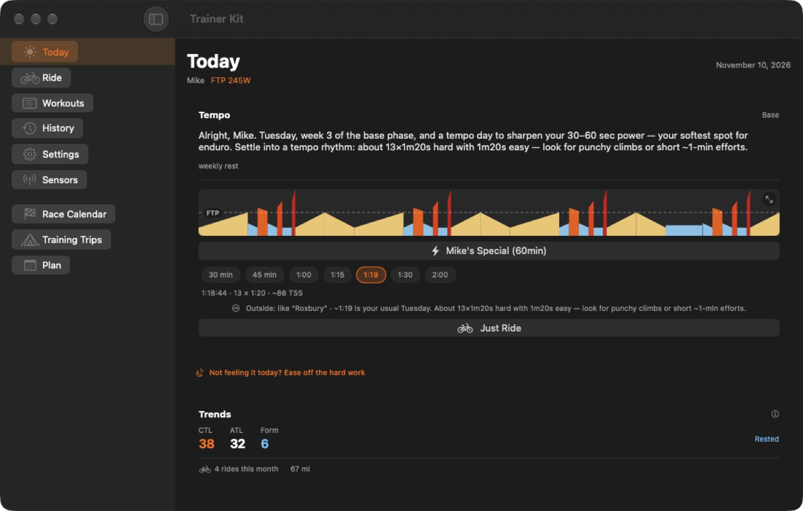
Set up or restore. First launch offers New Setup (name, FTP, weight, units, then Start Training) or Restore from iCloud for a profile you already have on another device. Restoring brings your rides, workouts, races and trips with it over the next minute or two.
Pair the trainer. Click Sensors in the sidebar, wake the trainer by turning the pedals, then Scan for Sensors. It appears under Smart Trainers; click Connect. The live power readout at the top of the panel is your sign it is working. Allow Bluetooth when macOS asks.
Add a power meter or heart rate if you have them. A power meter under Power Meters overrides the trainer's own power once connected; Calibrate does a zero offset with your feet off the pedals. Heart rate on the Mac comes from a Bluetooth strap.
Ride. Click Ride in the sidebar. Start Ride launches today's suggested session on the trainer. Under More ways to ride are the Route Library (GPX and Ride with GPS routes with grade and surface resistance), Free Ride (you set the grade) and the Ramp Test for a fresh FTP. Workouts holds the library if you would rather pick your own.
During the ride. The ride takes the whole window. In a workout the trainer holds each step's power, known as ERG mode; in a route the trainer sets resistance from the grade and surface and you shift your own gears. Pause and End are on screen.
Finish. The summary shows the ride already saved. Rides upload to Strava, Intervals.icu or Ride with GPS if the service is connected and Auto Upload is on in Settings, and reach Apple Health through your iPhone if you allowed Health access there.
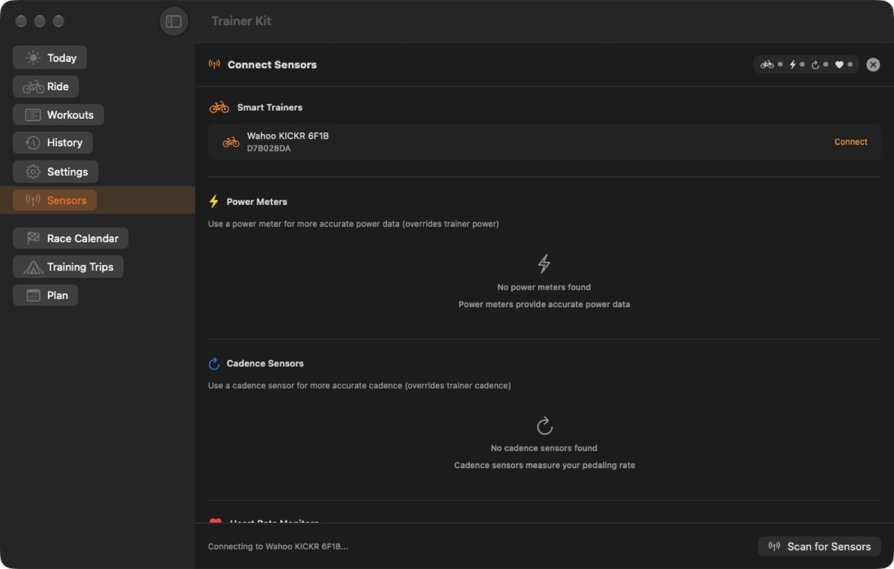
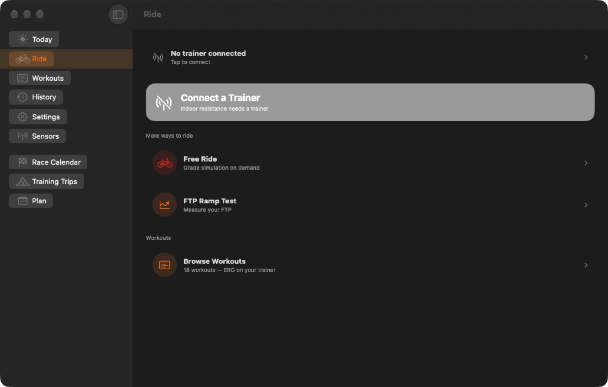
Several riders, one Mac. Each TrainerKit window owns its own trainer connection and athlete, so two people on two trainers can ride side by side from two windows.
Where things live afterwards. Today, Plan and History match the iPhone. Race Calendar and Training Trips are where races, trips, vacations and sick days go; the plan reshapes around them.
Quick Start — Apple TV
The Apple TV is the big-screen trainer: workouts, routes and free riding with full trainer control. It has no web browser, so the two account connections are done once with your phone's camera. It has no link to the TrainerKit Watch app either, so heart rate needs a Bluetooth strap.
Set up or import. First launch offers New Setup (name, FTP, weight, units, then Get Started) or Import existing profiles from another device, which pulls your profile from iCloud. Choose Import if you already ride on an iPhone or Mac; your rides, workouts and plan follow.
Pair the trainer. From the home screen choose Connect Sensors, wake the trainer, then Scan for Devices. Select it under Smart Trainers. Power meters, heart-rate monitors and cadence sensors have their own rows on the same screen and pair the same way.
Heart rate. Pair a Bluetooth strap.
Connect Strava once. Settings → Connect to Strava shows a QR code. Scan it with your phone, authorize TrainerKit on the Strava page, copy the code it shows, enter it on the TV and select Submit. Rides then upload themselves. Connect to Ride with GPS and Connect to Intervals.icu work the same way; Ride with GPS also unlocks Import Routes. All three connections last until you disconnect them.
Ride. Workouts picks a session from the library and Generate builds one for today. Routes lists the routes you brought in with Import Routes from Ride with GPS (the step above); select one and its options and Start Ride sit right under it, so you never scroll past the list. Free Ride lets you set the grade yourself. Trainer control is the same as on the Mac: the trainer holds power in a workout (ERG mode) and sets resistance from grade and surface on a route.
Finish. The summary shows the ride already saved. It uploads to the services you connected and reaches Apple Health through your iPhone on its own. History on the home screen shows every ride with its elevation profile.
Where things live afterwards. The home screen opens on a Today card: the coach's session for the day with its name, length and power profile. One press opens the Today screen, where the length chips under the session resize it for today and Start rides it on the trainer. Plan is the four-week outlook, read-only on the TV. Switching athletes in Settings reloads all of them.
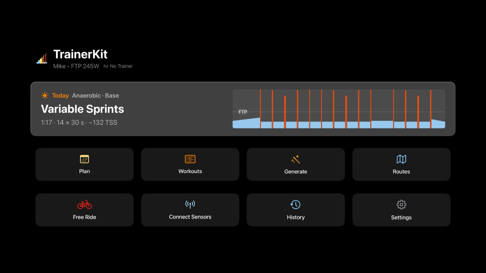
If the trainer is not found. Only one app can hold a trainer at a time: close TrainerKit on your iPhone or Mac, and any other training app, then scan again.
Pairing devices
TrainerKit talks to sensors over Bluetooth on iPhone, Mac and Apple TV, and through watchOS on the Watch. Pair once; after that every connection, reconnection and dropout is handled for you. A sensor only ever accepts one connection at a time, and most of what goes wrong with pairing comes back to that one rule.
What pairs where
| Sensor | iPhone | Mac | Apple TV | Apple Watch |
|---|---|---|---|---|
| Smart trainer | Ride tab → sensor line | Sensors | Connect Sensors | Not used |
| Power meter | Ride tab → sensor line | Sensors | Connect Sensors | watchOS Settings → Bluetooth → Health Equipment |
| Heart-rate strap | Ride tab → sensor line | Sensors | Connect Sensors | watchOS Settings → Bluetooth → Health Equipment |
| Cadence sensor | Ride tab → sensor line | Sensors | Connect Sensors | watchOS Settings → Bluetooth → Health Equipment |
| Apple Watch heart rate | Automatic, TrainerKit on the Watch | — | — | Built in |
Smart trainers. Wake the trainer, scan, connect. TrainerKit speaks the standard FTMS protocol that almost every current trainer uses, plus the Wahoo protocol for older Kickrs and Tacx FE-C for the NEO family, and recognizes about thirty brands by name. In a workout it holds your target power, known as ERG mode. On a route it sets resistance from the grade and the road surface and you use your own gears, exactly as outdoors. Trainers with a built-in power meter report power and cadence themselves; you do not need separate sensors.
Heart rate. A Bluetooth strap pairs like any sensor on every platform. On the iPhone, TrainerKit on your Apple Watch opens by itself when a ride starts and supplies heart rate with nothing to set up. The Mac and Apple TV have no link to the Watch, so use a strap there. TrainerKit does not read heart rate relayed through a trainer.
Names. The pencil icon beside a connected sensor gives it a name of your own, which is how you tell two identical power meters on two bikes apart. Names are kept on the device and survive reinstalling the app.
One connection at a time. This is the rule behind most pairing trouble. Close TrainerKit on the iPhone before a Watch-only ride, or the Watch cannot reach the power meter. Close other training apps before scanning. When you ride with the iPhone and the Watch together, the iPhone owns the power meter and the Watch supplies heart rate; the Watch never tries to take the meter. If a meter disappears from the iPhone mid-ride and the Watch is nearby, the iPhone says Power meter may be connected to Apple Watch.
Dropouts and reconnection. Reconnection is automatic and needs nothing from you. A number that turns to a dash has not been heard from for a few seconds and is recorded as missing rather than frozen, so an average is never padded with a stale value. Short dropouts outdoors are usually your body between the sensor and the phone: a phone in a frame bag or on the bars sees the crank far better than one in a back pocket. Do not turn Bluetooth off and on mid-ride; the app recovers faster than the radio does.
Smart bikes with OpenBikeControl. A Stages SB200 shows its current gear on the ride screen, and its lap, pause and skip buttons work in TrainerKit. The bike keeps control of its own gearing. The switch is in iPhone Settings → Ride Controls → Smart Bike Gear & Buttons, on by default and applied at the next connection. New, and not yet tried on a real bike; if you have one, tell us what you see.
Bike Fit. Bike Fit (Profile on the iPhone, Settings on the Mac) is a notebook for the fit numbers of each smart bike you ride: saddle height, setback, bar reach and so on, as the bike's own scale reads them, for the Stages SB20 and SB200, Wahoo KICKR Bike, Tacx NEO Bike, Wattbike Atom, Zwift Ride, Elite Square or any other bike. Each bike lists only the adjustments it actually has. When a bike you have a fit for connects, its numbers show under the trainer on the sensor screen so a shared bike goes back to your settings in a minute; when one connects with no fit saved, the screen offers Save your fit for this bike. Nothing here changes how the trainer rides.
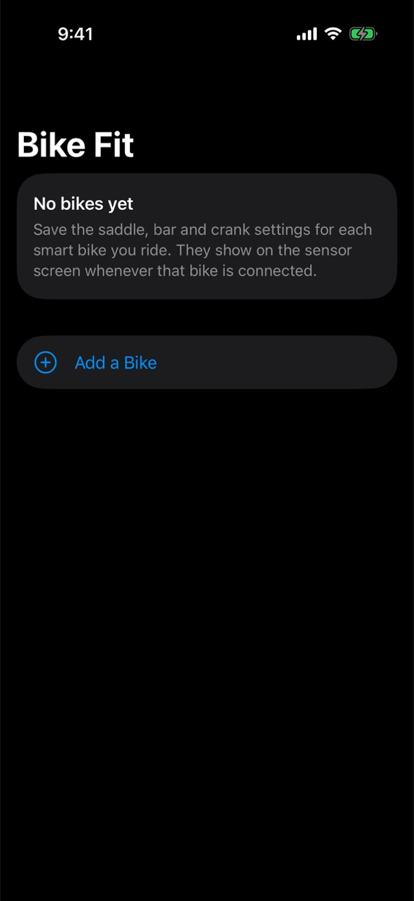
When it will not pair
Sensor not in the list: turn the pedals or press the sensor's button to wake it, make sure no other app or device holds it, then scan again.
Trainer connected but resistance does not change: the trainer is holding a workout's power in ERG mode, or another app still has control. Disconnect in the other app and reconnect here.
Watch ride shows no power: the meter is paired in Health Equipment, and TrainerKit is closed on the iPhone.
Indoor ride shows no heart rate: on the iPhone, open TrainerKit on the Watch and keep it awake on your wrist. A line under the iPhone's ride screen says what it is doing while no heart rate arrives (Launching Watch app…, waiting for it to connect, No Apple Watch paired, or TrainerKit isn't installed on your Watch) and it keeps retrying by itself. On the Mac or Apple TV, pair a strap before scanning.
A sensor keeps showing a few seconds old: move the phone or Mac into the sensor's line of sight; on the Watch, wear it on the same side as the power meter's transmitter.
Riding indoors
There are three ways to ride on the trainer, and they differ in who controls the resistance. In a workout the trainer holds each step's power for you. In Just Ride you set the grade and shift your own gears. On a virtual route a GPX course sets the grade and the surface for you. All three run on iPhone, iPad, Mac and Apple TV; the Watch rides outdoors and relays heart rate indoors.
Starting a ride. On the iPhone the Ride tab's Start Ride button begins a Just Ride on the connected trainer. Today's session starts from the Start button on the Today card, at the length you picked with its chips; any other workout starts from its own page in the Workouts tab (Start Workout, then Ride Indoors), and a route from the Route Library under "More ways to ride". On the Mac the home screen's Ride button and the Workouts list do the same. The Apple TV's Ride menu lists all three. No trainer connected? The screen says so and offers Connect Trainer; see Pairing devices.
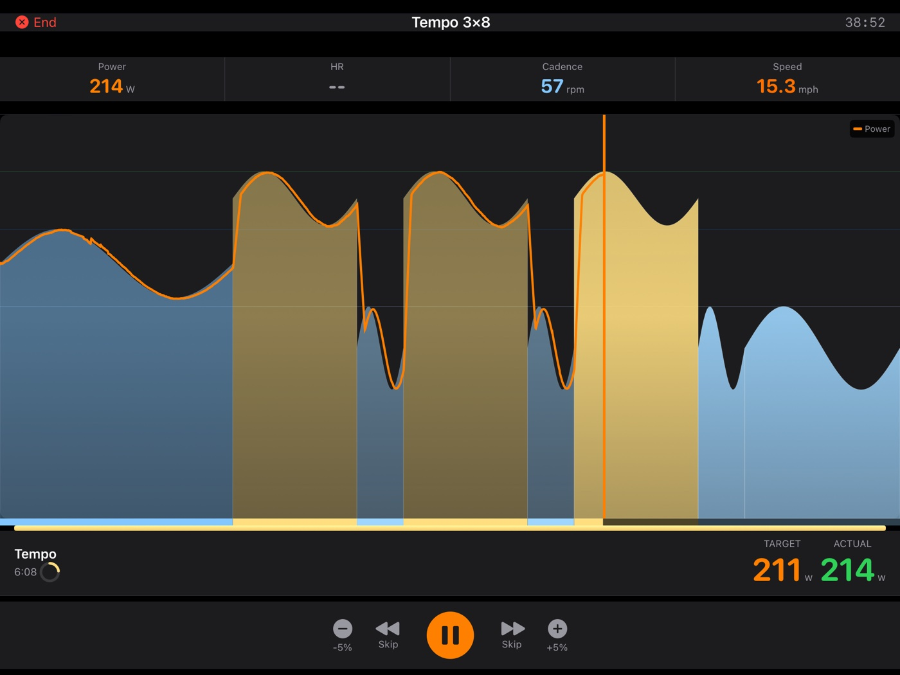
Workouts (ERG mode). The trainer sets its resistance to the current step's target, so your job is only to keep pedalling. The screen shows target and actual power, the step's remaining time, total time, heart rate and cadence over a graph of the whole workout with a cursor at your position. Actual power turns green when you are inside the step's band.
| Control | iPhone / iPad / Apple TV | Mac |
|---|---|---|
| Whole-workout intensity | −5% / +5% buttons | + / − keys |
| Next step | Skip | → (and ← for the previous step) |
| Pause | Pause button | Space |
| Finish early | End, then End & Save or End & Discard | End Workout, same choices |
Intensity moves every remaining target by the same percentage, so a day you feel flat can be the same session at 95%. Two switches change how a workout is ridden. Heart Rate Targets, on the workout's page on the iPhone, turns each step into a heart-rate target from your zones instead of watts, for a bike with no power meter. Power Variation, in Settings, lets the target oscillate inside the step's zone instead of holding one flat number, which feels more like riding outside.
FTP tests ride in Resistance Mode. The trainer stops holding a target and the screen says "use your gears to hit targets". The three protocols live under FTP on the Profile and are covered in Workouts.
Just Ride. The trainer runs in simulation mode: it feels like a road at the grade you set, and your gears do the rest. The grade buttons step −5, −1, FLAT, +1 and +5 percent. The surface you picked in setup sets the rolling resistance on top of the grade. Power, cadence, speed, distance, climbing and the current grade stay on screen, and End Ride takes you to the completion screen. On a Stages SB200 the gear tile shows the bike's own virtual gear and the bike's buttons work the on-screen controls.
Virtual routes. The Route Library holds every course you have imported: Import GPX File takes any GPX file, and Import from Ride with GPS pulls routes from your account once it is connected. Settings can restore the sample routes. Choosing a route shows its distance, climbing and a difficulty rating, plus the setup choices:
Surface Type sets the rolling resistance for the whole route. A route imported from Ride with GPS carries its own surface per segment, and that wins wherever the route has one; your choice fills the gaps.
Enable Laps repeats the route a set Number of Laps or Unlimited (until you stop). It stays one ride, with each lap marked as a lap in it.
Rider and Bike Weight feed the physics that turn your watts into speed on the route.
During the ride the trainer's grade follows the course, smoothed and capped at ±20% so a bad GPS spike in the file never locks the flywheel. The upper screen is a satellite map with your position (2D or 3D), the lower part the elevation profile with distance remaining; Show route map hides the map if you prefer the profile alone. A race on your calendar with a course attached offers Simulate on Trainer, which rides that course's elevation profile on the trainer. Send to Ride with GPS pushes a library route up to your account.
Riding outdoors
Outdoor rides record on the iPhone or on the Apple Watch. The iPhone records GPS, your Bluetooth sensors and the Watch's heart rate; the Watch on its own records GPS, its own heart rate and any sensor paired to it in Watch Settings. Both save the ride as it goes, so a dead battery or a crash costs you minutes, not the ride.
Starting on the iPhone. With no trainer connected, the Ride tab's Start Ride button is an outdoor ride; Ride Outdoors under "More ways to ride" always is. If no sensors are found the app says so and offers Ride with GPS Only, which still records speed, distance and the map. A workout rides outdoors from its page (Start Workout, then Ride Outdoors), and a course from Follow a Route. The screen reads "Acquiring GPS" until the first good fix; wait for it before rolling or the opening metres are guessed.
The ride screen is a set of pages you swipe between, with heart rate and elapsed time pinned at the top and the controls pinned at the bottom.
| Page | What it shows |
|---|---|
| Dashboard | Three metrics from a roller: power, cadence, speed, distance and climbing. Swipe up or down, or tap, to bring another to the top. |
| Lap | The current lap's time, distance, average speed, power and heart rate. |
| Map | Your track on a satellite or standard map, with a distance and elevation pill. The style picker is on the map. |
| Workout | Structured rides only: the step graph with your position, target and actual, and the step's remaining time. |
Pause. The pause button stops everything: time, distance, climbing and the map line all hold until you resume, and the pause is spoken and buzzed so an accidental tap is never silent. A full-screen cover shows the paused time with Resume and End. If you forget to resume, the ride resumes itself after ten seconds above 5 km/h.
Laps. The flag button marks a lap, confirmed by a "Lap N" banner and a haptic. Taps within three seconds of each other are ignored, so a double tap with gloves on is one lap. Laps go into the FIT file, Strava and History. The Watch marks laps on the iPhone's ride too.
A workout outdoors starts paused so you can get rolling first; press play when ready. Each step is spoken with a countdown into the next one, and the coach says "push harder" or "ease up" when your step average sits outside the target for ten seconds. The −5% / +5% buttons shift every remaining target. When the last step ends the ride carries on as a free ride until you end it. Riders without a power meter can ride any workout to heart-rate targets with the toggle on the workout's page.
Follow a Route. Pick a route from the Route Library, import a GPX file, or take one from Ride with GPS, and the course is drawn on the live map under your own track, with a course-up 3D camera that keeps the road ahead at the top of the screen. A race with a course attached offers Ride Course Outdoors from the event. This is a guide line, not navigation: there are no turn cues and no off-course warning yet.
The Watch beside the iPhone. TrainerKit opens on the Watch when an iPhone ride starts and shows the same live numbers on your wrist. Its heart rate goes to the iPhone, which is the one device recording, so Apple Health gets one workout, not two. The Watch's lap and pause buttons work the iPhone's ride.
The Watch on its own. Ride, Mountain Bike and E-Bike start a standalone ride after a 3-2-1 countdown; Workout lists the workouts synced from the iPhone. Swipe up and down to move between the pages: Dashboard, Power (when a meter is paired), Lap, Averages and Map, each with the same lap, pause and stop footer. Two switches on the home screen matter on a long day:
Map Page keeps the breadcrumb map off the carousel. The route is still recorded; it is the map's drawing that costs battery, and watchOS Low Power Mode hides the page by itself.
Wet Mode locks the screen at the start so rain cannot tap End; press and hold the Digital Crown to unlock.
On an Apple Watch Ultra, TrainerKit appears under Action Button → Workout, and Siri understands "Start a ride with TrainerKit". When you end the ride the completion screen shows the summary and the hand-off ("Sending", then on iPhone, then in iCloud); the ride is already saved on the Watch before that screen appears, and it keeps retrying the hand-off each time you open the app.
E-Bike rides record heart rate and the map but not power, and the coach counts them toward your weekly load through heart rate only. Volume Buttons Adjust Ride, off by default in Settings, lets the iPhone's rocker step a workout's intensity; leave it off if you ride with AirPods, whose volume presses look identical.
Long rides on the iPhone. The ride survives the screen locking and other apps in front. Switch off Low Power Mode before a long ride: it makes iOS far more willing to stop a background app, and while the ride is saved every few minutes, a stopped app still means pulling the phone out to restart it.
Enduro mode
An enduro ride is laps that alternate between a liaison (the transfer or climb to the next stage) and a stage (the timed descent). TrainerKit names and times them for you, colours them apart everywhere the ride is shown afterwards, and on a marked course starts and stops the stages by itself.
Starting. On the iPhone, Enduro Ride sits under "More ways to ride" on the Ride tab. On the Watch, the Enduro button starts a Free Enduro, or opens a course picker when marked courses have synced from the iPhone. The dashboard roller swaps Climbed for Descended, and the Lap page shows the phase name instead of a lap number.
Marking stages by hand. The flag button moves you to the next phase. Tapping into a stage pauses the ride and runs a 3-2-1 countdown with the stage name, then GO: tap it while you are stopped at the start line, and the stage timer begins when the countdown ends. Tapping into a liaison shows a short overlay and carries on. Ride a stage you forgot to mark and the end of that lap is simply named for you when the ride ends.
A course that marks itself. Give a route its stage gates and no taps are needed on race day:
Arriving within 10 m of a stage start shows an alert, with a haptic and a spoken cue. Nothing is timed yet; rest at the line as long as you like.
Dropping in, when you roll out of the start zone, marks the stage. There is no pause or countdown, because you are already riding.
Finishing, when your line passes within 10 m of the finish gate, ends the stage and the next liaison begins.
The map draws stages in red and liaisons in green, with an S1, S2 marker at each start and a chequered flag at each finish. The flag button still works as an override on a day when tree cover pushes the GPS off by more than ten metres.
Getting the gates onto a route. A gate is a named marker: "Stage 1 Start" and "Stage 1 Finish", exactly three words each ("End" also works for the finish). Three ways to add them:
Edit Course, from a route's preview or a race's course on iPhone, iPad and Mac. Tap the map to place the cursor on the course, nudge it by 10 m or 100 m, and add gates in start-then-finish order; Remove Last undoes the most recent one. You can also trim the route's start and finish. Saving makes a new route, or, from a race, replaces the event's course and syncs it to every device and the Watch.
Ride with GPS points of interest with those names import as gates.
GPX waypoints with those names import too, so a file exported from TrainerKit, edited and re-imported keeps its gates. Strava routes cannot carry markers.
Follow a Route offers "Ride Enduro — stage alerts" when the chosen route has gates, and a race course with gates offers Ride Enduro from the event.
On the Watch. Marked courses reach the Watch automatically whenever the iPhone has them. With Wet Mode on, a gated course lets the screen stay locked for the whole race pattern because nothing needs tapping; on a free enduro you unlock with the crown, tap the flag, and the screen re-locks itself about six seconds later.
Afterwards. In History the map, the elevation profile and the power chart are coloured per lap, red for stages and green for liaisons, with each stage's time, distance and descent in the laps list. The ride uploads to Strava as a Mountain Bike Ride. Save as Route on the completion screen or in History sends the ride to Ride with GPS with the stages as points of interest and a generated course summary, so the next visit can ride it as a marked course. Rides over 75 minutes get a Beyond Power card: how your power held from the first third to the last, and the descent total, which power-based load never sees.
Training for it indoors. The workout generator's Enduro type builds a race simulation: the number of stages, a stage mix (Short & Punchy, Long & Technical, Mixed, or Pedaly), and the liaison length between them. The coach treats a real enduro ride as a punchy kind of day, never an easy one, however low its power numbers read.
Workouts
A workout is a list of steps, each with a length and a target. Targets are a percentage of your FTP, a fixed number of watts, or a heart-rate zone, so the same file scales as your FTP changes. Workouts live in the Workouts tab on the iPhone and the Workouts list on the Mac, sync between your devices through iCloud, and reach the Watch for outdoor use.
The library. A new install carries six starters, from Active Recovery to VO2 Max Classic, and Settings can restore them if you delete one. The coach draws on a larger internal pool as well: sweet spot, threshold, over-unders, openers, race simulations and enduro-specific sessions. When the Today card suggests a session it picks the best match from your library first and generates one only when nothing fits.
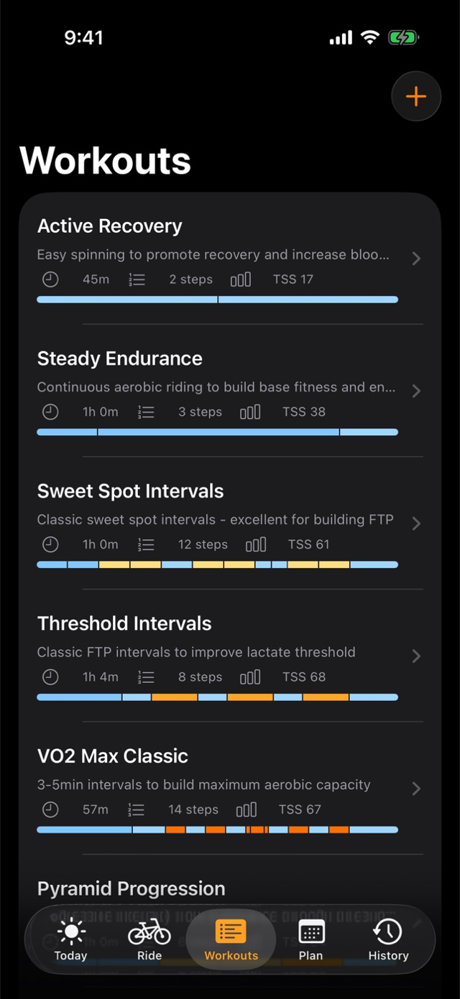
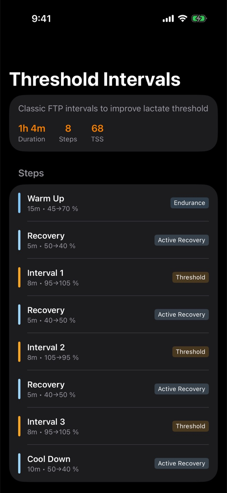
Importing. Import Workout accepts the four common files: .zwo from Zwift, .erg and .mrc from TrainerRoad and most workout sites, and .fit workout files from Garmin. Steps written as a percentage of FTP come in as percentages, so they follow your FTP; fixed-watt files stay fixed.
Generating one. Generate Workout builds a session from four choices and saves it to the library.
| Choice | Options |
|---|---|
| Workout Type | Endurance, Sweet Spot, Threshold, VO2 Max, Sprint, Neuromuscular, Enduro, Recovery |
| Duration | Total length; the generator sizes the warm-up, main set and cool-down to fit |
| Interval Length | How long each work step runs (not used for Enduro) |
| Enduro only | Number of Stages, Stage Mix (Short & Punchy, Long & Technical, Mixed, Pedaly) and Liaison Duration between stages |
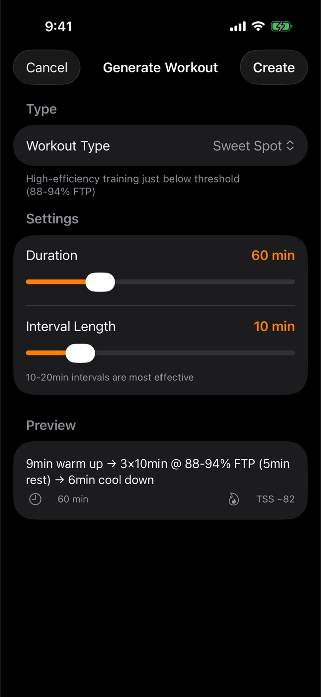
The preview shows the profile and its TSS before you create it.
Building one by hand. New Blank Workout opens the editor. Add Step, then set the step's type (Active Recovery, Endurance, Tempo, Threshold, VO2 Max, Anaerobic or Neuromuscular Power), its length, and its target as FTP %, watts or heart rate. Ramp makes the target slide from a start value to an end value over the step. Steps can be duplicated, reordered and pasted, and a run of steps you reuse, such as a favourite warm-up, can be saved to the Blocks Library and dropped into any later workout. The Mac is the comfortable place for this: it has the full keyboard set (Space to pause while riding, arrows between steps, copy, cut, paste, duplicate and move steps, a New Step shortcut; the list is under Keyboard Shortcuts), the Blocks Library beside the timeline, and Save as Template for workouts you want to start others from. A workout can carry its own FTP (Workout FTP Settings → Use workout-specific FTP) for a session you want to ride at last season's number, and exports as .erg or .fit for other platforms.
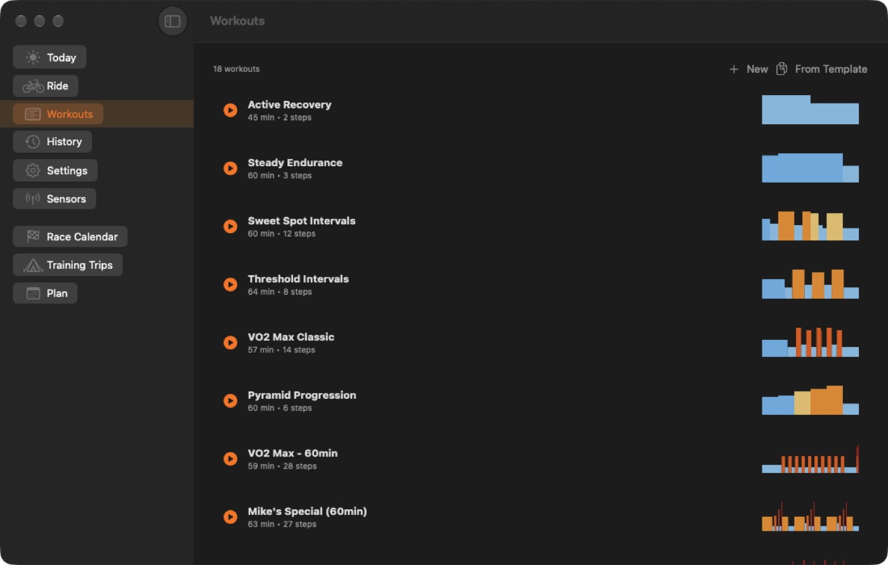
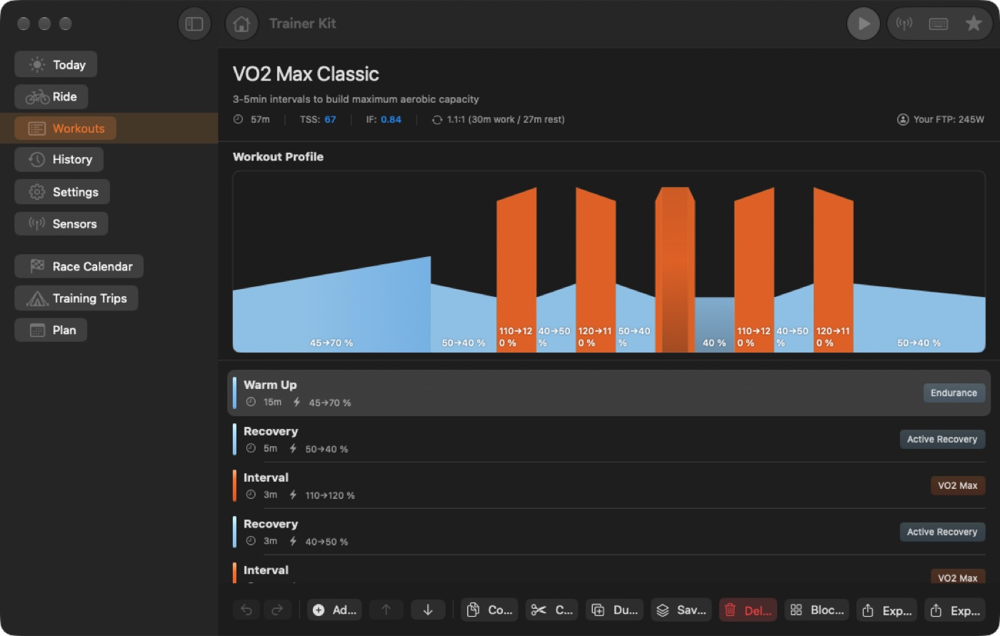
FTP tests. Three protocols live under FTP on your Profile. The Ramp Test runs in ERG: five minutes easy, then the target rises 20 W every minute until you cannot hold it, and FTP is 75% of your best one-minute power. The 20-Minute Test and the 2 × 8-Minute Test run in Resistance Mode with a warm-up, a short blow-out effort and a recovery before the timed effort or efforts; FTP is 95% of the 20-minute average, or 90% of the average across both eight-minute efforts. The completion screen shows the FTP Test Result with an Update FTP button, and every test is kept under FTP Test History. The ramp test is indoor-only; the other two can be ridden outdoors from the workout's page.
Riding a workout to heart rate. The Heart Rate Targets switch on a workout's page converts every step to a heart-rate zone from your maximum and resting heart rate (set on the Profile, or estimated from your age). Use it outdoors without a power meter, or indoors when you would rather the trainer not hold the watts.
After the ride
Ending a ride saves it first and asks questions second. By the time the completion screen appears the ride is on disk, so you can put the phone away and come back to it.
The completion screen. The summary shows time, distance, average and normalised power, heart rate, climbing and TSS, with the elevation profile for an outdoor ride. The name field holds a suggested name as a placeholder, built from where you rode, the ride type and the date ("Powell MTB · Oct 11"); type over it or leave it. Under the name one line states how the ride is tagged, for example "Road · Trek · Race", chosen for you from the route you followed, an earlier ride on the same roads, your default ride type or your history. Change opens the pickers if it guessed wrong: ride type (Road, Mountain, Gravel, E-Bike, Enduro), the Strava bike, and Race or Workout as the Strava activity type. On the day of a race on your calendar the ride uploads as a Race by itself. The buttons below are the destinations: Upload to Strava, Upload to Intervals.icu, Upload to Ride with GPS, Save as Route, Export .FIT and Export .GPX. Done closes the screen; nothing is lost if you leave without tapping it.
Where rides go.
| Destination | What it gets | Set up where |
|---|---|---|
| TrainerKit History | Everything, on every device signed into your iCloud | Automatic |
| Strava | The FIT file with the ride type, bike and name; indoor rides as Virtual Ride, enduro and MTB as Mountain Bike Ride | Profile → Strava, then Strava Bikes for a default bike per ride type |
| Intervals.icu | The FIT file; Intervals reads the ride type from it | Profile → Intervals.icu, paste your API key |
| Ride with GPS | The ride as a trip; Save as Route turns a ride into a route with surface data and, for enduro, stage markers | Profile → Ride with GPS |
| Apple Health | One Indoor or Outdoor Cycling workout with heart rate, power, cadence, speed, distance, route, elevation, segments and an effort score | iPhone Profile → Apple Health; Mac and Apple TV rides reach Health through your iPhone. On a device with more than one athlete, Health belongs to picks whose Health it is |
| Files | .fit with every sensor channel; .gpx with the track plus heart rate, cadence and power | Export buttons, completion screen or History |
Auto-upload (Settings → Auto-upload completed workouts) sends the ride to every connected service when you tap Done, so the buttons are only for a second copy or a service you connected later. Uploads from History work the same way for an older ride.
FTP and weight go both ways with Apple Health. With Update FTP and weight from Health on (Profile → Apple Health, on by default), the newest FTP or weight another app wrote to Health, such as the Watch's own FTP estimate or a smart scale, becomes yours, once per reading, and Today shows a short note saying so. An FTP you type in TrainerKit is written back to Health, so it becomes the newest sample and stands until something newer arrives. Mac and Apple TV see the result through your profile sync.
History. The History tab lists every ride with its date, duration, distance, TSS and a thumbnail of its terrain or power profile. A ride without power shows an estimated TSS from heart rate, marked with a tilde. Opening a ride gives:
Summary and the tag line, the rename control (the new name syncs to every device and to a Strava upload made afterwards), and Delete, which also removes it everywhere.
Performance: smoothed power, heart rate, cadence and speed over time, with each step's target drawn over a structured ride, and the map and elevation profile for an outdoor one.
Power Distribution, time in each 25 W band coloured by zone, and Peak Power, this ride's best 5 seconds to 60 minutes against your 90-day best, with a star where the ride set one.
Laps, with averages per lap, stage and liaison.
Beyond Power on long or gravity rides, and Perceived Effort, a 1 to 10 slider that you may fill in or ignore; nothing in the coaching depends on it.
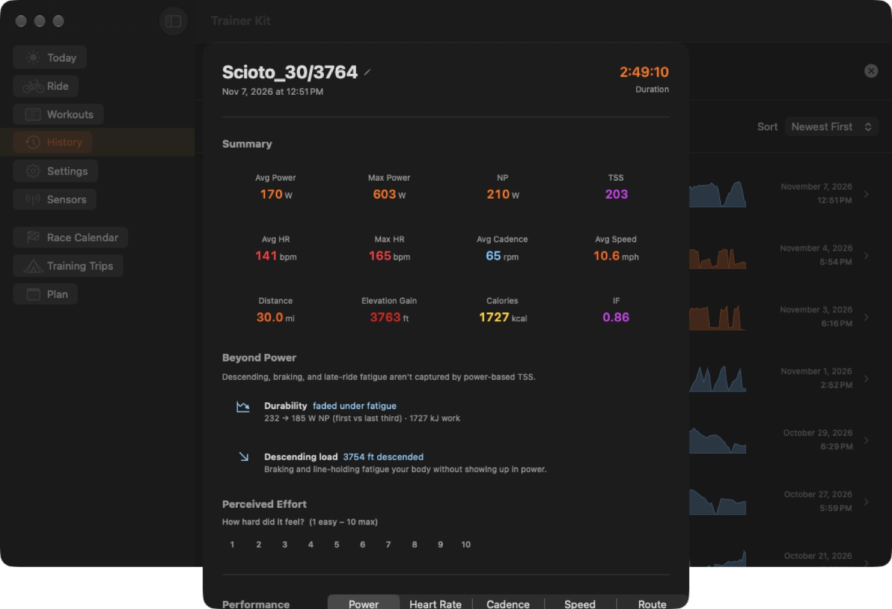
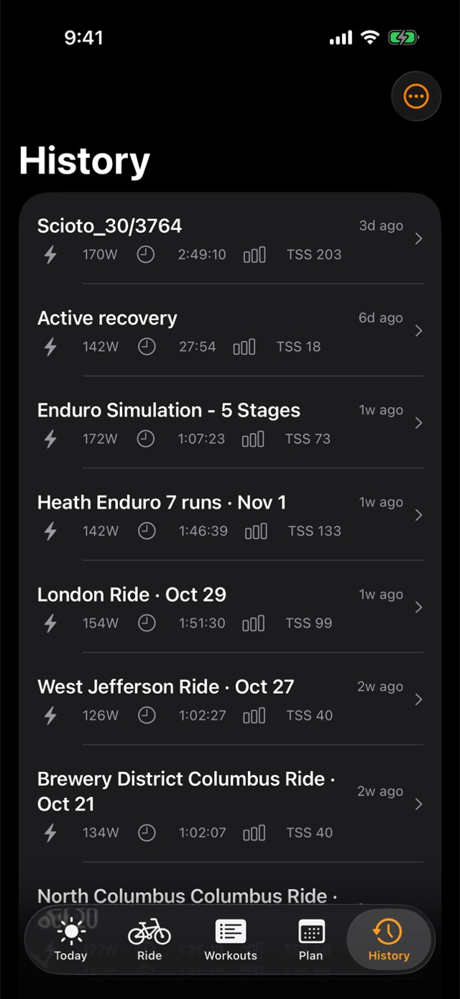
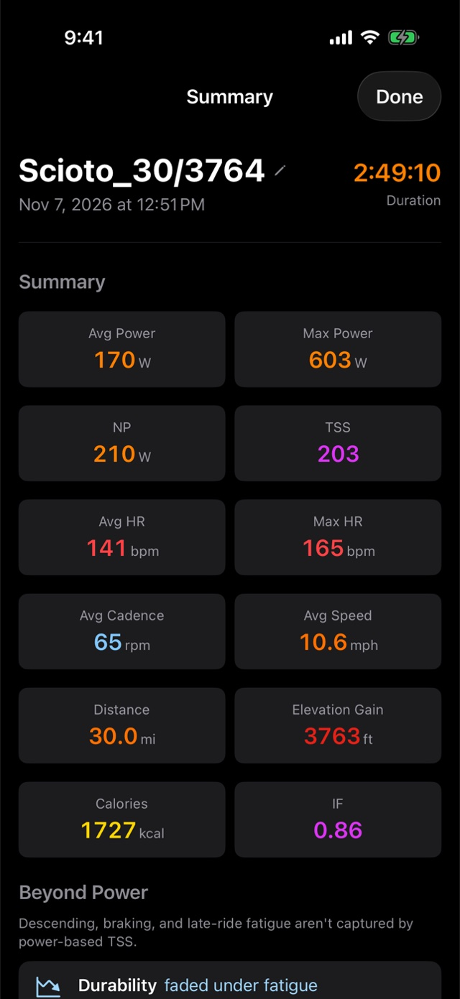
If a Watch ride never arrived. Open TrainerKit on the Watch with the iPhone nearby and it retries the hand-off. If the Watch itself lost the ride, Recover from Apple Health, in the menu at the top of History, rebuilds it from the copy the Watch wrote to Health, including heart rate, distance and the GPS route.
Coaching
The coach is built from your rides and nothing else. It never asks you to log sleep, mood or effort; it reads power, heart rate, duration and the calendar, learns which days you ride and how hard, and tells you what kind of day today is. Everything it decides is recomputed as rides arrive, so there is no plan to fall behind.
Setting it up. The first time you open Today it shows a Set Up Your Training card with four rows (Riding style, Disciplines, Goals, Coaching style) and a Continue Setup button. Under it: "Or just ride — we learn from every ride." Skip is in the corner of every step, and nothing you skip is lost: Profile → Edit Training Profile on the iPhone, or Settings → Edit Training Profile on the Mac, reopens the same four steps at any time. The Apple TV has no setup of its own; it uses the profile your iPhone or Mac synced.
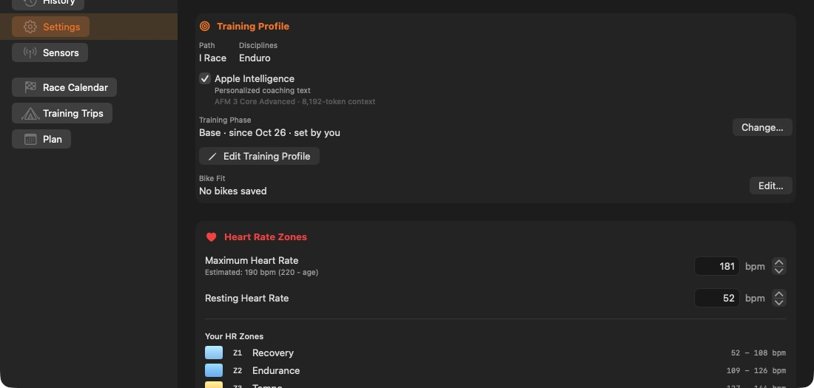
| Step | The screen asks | What it changes |
|---|---|---|
| Get Started | What kind of riding do you do? I Race (Competitive events), I Ride (Fitness & fun) or I Just Ride (No goals, just pedal) | I Race lets the race calendar drive the phases: build, peak and taper around your events. I Ride gives the same coaching with goals instead of events. I Just Ride turns Today into one Ride button over your fitness numbers and the kind of day it is, with Set goals a tap away; the coach still learns from every ride. |
| Disciplines | What do you ride? Select all that apply, grouped under Road, Gravel and Mountain, each with a one-line note on what it trains (Criterium: repeated hard efforts, sprinting, recovery between surges) | The first one you tick carries the most weight and becomes your primary discipline, which picks the key session of the week and the enduro treatment of your rides. Next needs at least one. |
| Goals | I Race: Add your first event (name, date, A, B or C priority, type); "You can always add more from Settings." Otherwise: What do you want to get better at? General fitness, Climbing, Endurance / longer rides, Speed / power, I just want to ride more | The event goes straight onto your Race Calendar and the plan builds toward it. The goals are kept on your profile; today the coaching itself is driven by your discipline and your rides, not by this list. |
| Coaching Voice | How should your coach talk to you? A slider from Just the data to Full coach, with a Preview of the same day in each voice ("5x5min @ threshold. Focus: sustained power." at one end, "Your fitness is climbing nicely — let's sharpen that top-end with some threshold repeats today." at the other) | How much the Today card says around the session. On a device with Apple Intelligence an Apple Intelligence switch (Generate personalized coaching text) appears here, with the model it will use named beneath it. Done saves the profile. |
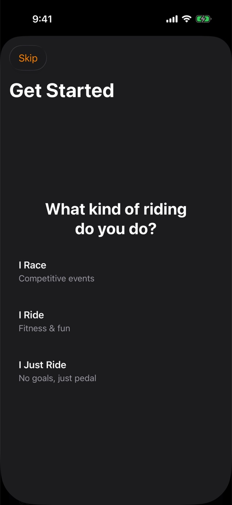
The profile syncs to every device, so the setup is done once. Change any of it later from the same Edit Training Profile button; a race added later from the Race Calendar does the same as one added here. Apple Intelligence, when it is on, rewords the coach's notes in a more natural voice; the facts and the session underneath never change.
The Today card is the coach's one sentence for today, with the reasoning a tap away under Why This Emphasis.
The suggestion: a kind of day (easy, steady, long, punchy or hard) and the session for it, drawn as its power profile with a Start button. Tap the profile for the full preview: the steps folded into rounds, each target in your watts, and Start inside. Under the profile, length chips (30 min, 45 min, 1:00, 1:15, 1:30, 2:00, and the plan's own length) resize the session for today only, on this device only; a longer choice repeats the whole set with a set break, never a flat easy block. An outdoor rider gets the same session plus one "Outside:" line naming a real ride from their history to copy, the usual length for that weekday, and how to fold the session's efforts into it.
Fitness, Fatigue and Form: the rolling 42-day and 7-day training load and the difference between them. Form below the safety floor turns the day easy whatever the plan says.
Weekly Load: this week's TSS against the target, split into easy, moderate and hard, with the one change that would keep the week on track ("Tuesday 1:19 → 1:55"). Near the end of a load week, Close out your week starts a ride with the remaining TSS counting down on screen.
Trends: the power profile, capability trends (punch, climbing, efficiency, durability) and the current Progression Block, a four-week target on one capability that only ever asks for a step you could see.
Swap trades today's hard day with tomorrow's when life gets in the way. The week's load is unchanged.
Readiness appears when Apple Health is connected, and only ever eases a day, never hardens one.
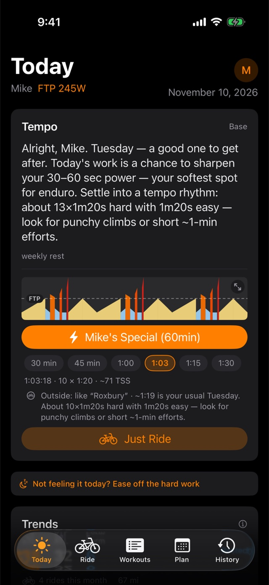
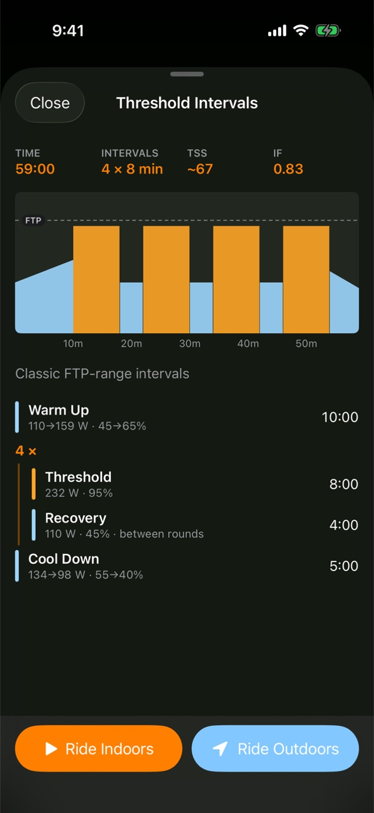
After a ride the card turns into a note about that ride: how it fit the phase, how it compared with your usual ride on that weekday, and what tomorrow should be.
The Plan tab is a four-week outlook, not a schedule. Each cell is a kind of day, its fill deeper for a bigger day and blank for rest, and last week's cells show what you actually rode. Tap a day for its strip, and the chevron for the detail: the reasoning, the usual length, the nudge ("Add about 20 min to your usual Marble Cliff ride"), and Start or Simulate on Trainer where a session or course exists. Today's row at the top shows the same session, length chips and preview as the Today card, and the phase name in the header opens the Training Phase picker. The phase bar across the top names the phase (Base, Build, Peak, Off-Season) and the week within it, running to the next race. The Weekly Load bars show each week's target with the projected Fitness line over them; the line slopes up in a load week and dips in the deload week that ends every third or fourth.
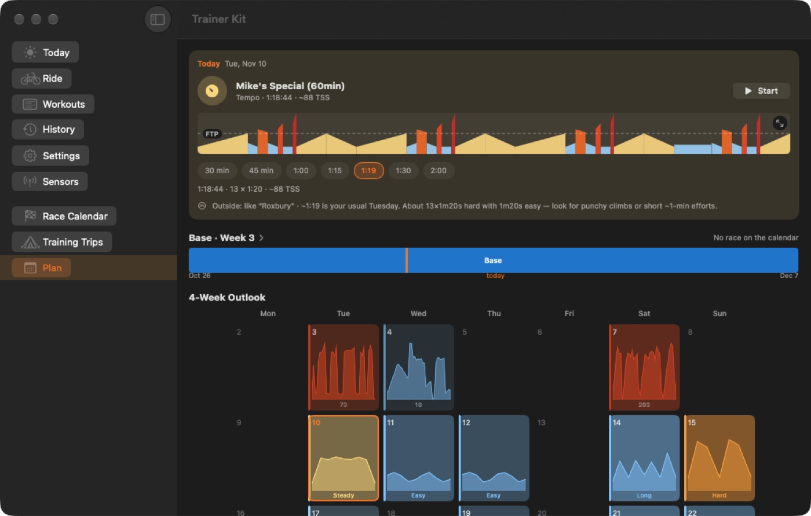
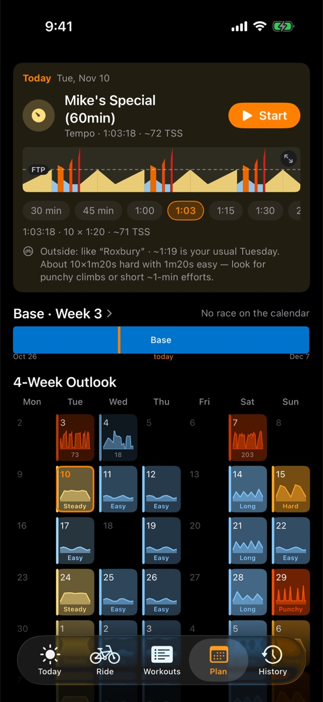
How it decides. Three rules do most of the work. Your hard days are the weekdays you actually ride hardest, learned from the last 60 days with trips and off days excluded, frozen each Monday so every device agrees, and the discipline's key session goes on the hardest of them. The weekly target is a fitness ramp, a few points of CTL a week in Base, less in Build, holding in Peak, and the extra volume lands on your easy days as longer rides, never as more intervals. Every third or fourth week is a deload at about half the load. The day before any race is easy, the days after a race recover, and a week with time off shrinks to the days you can ride rather than cramming the lost work into the rest. When the coach thinks you are ready for the next phase it asks on the Today card; Move changes the phase, and Stay leaves the phase and its start date exactly as they are and stops asking for this stint.
Setting the phase yourself. Training Phase (Profile on the iPhone, Settings on the Mac, or the phase name on the Plan tab) offers Base, Build, Recovery and Off-Season, plus Let TrainerKit decide, with a date for when the phase began. Set the date back if you have been in the phase a while, so the week count does not restart. Peak and Taper come from your races and cannot be set here. The choice syncs to every device.
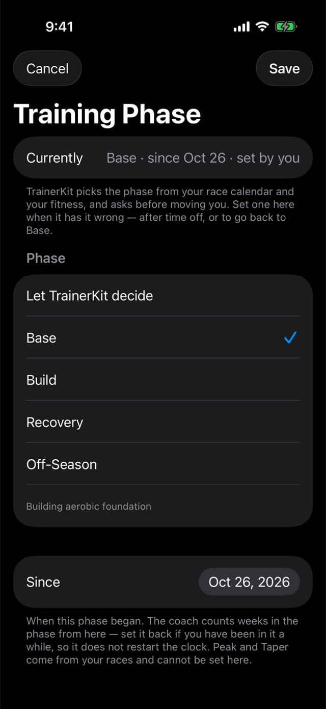
Races. Race Calendar (under Today on the Mac, Plan on the iPhone) holds your events: date and optional start time, type and discipline, priority, registration state, website, and a course. Priority decides the preparation: an A race gets a full build, peak and taper; a B race a taper; a C race is ridden as training, though the day before is still easy. A course GPX attached to the event gives you Simulate on Trainer and Ride Course Outdoors, and the ride you do on race day is linked to the event and uploaded to Strava as a Race. Goals and results live on the event, and Import CSV takes a season's calendar at once. Races and trips can be exported to a TrainerKit calendar in iCloud from Settings.
Trips and time off. Training Trips covers three things that break the weekly pattern:
A riding trip (downhill, pedal, mixed, gravel, road, training camp or riding holiday) with a daily plan: each day's venue, intensity, and Off (Travel) days. The coach tapers into it, rides it as companion days with trail-side cues instead of prescriptions, and recovers out of it. Mark one as the Primary goal trip and the build aims at it.
A vacation without a bike: those days are rest, a session that would have fallen inside a known vacation moves to a free day, and the first ride back is easy.
Being sick: leave the end date open with Still sick, and the Today card says "Hope you're feeling better" until you tap Ready to Ride. Nothing lost to illness is caught up. The first ride or two back are easy whichever day they land on, and a week with a long absence becomes the deload instead of adding another easy week later.
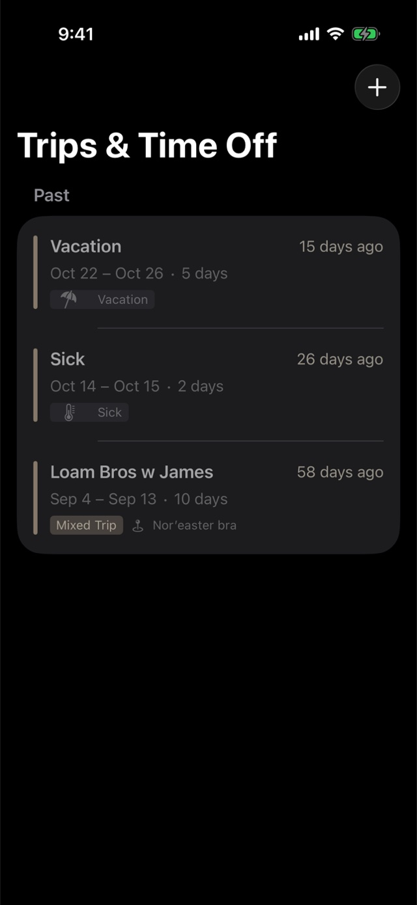
What it learns from. Every ride with power feeds the capability tracker and the hard-day ranking; a ride with only heart rate counts toward load but not toward power analyses; an e-bike ride counts toward load through heart rate alone; rides on a trip never set your "usual" day. Rename a ride, change its type or delete it and the coach recomputes on every device.
Settings and Profile reference
Every setting in one place. On the iPhone they are all on the Profile sheet behind the avatar at the top of Today; on the Mac in Settings; on the Apple TV in Settings on the home screen. A setting marked per athlete syncs to every device through iCloud; one marked per device stays where you set it. The Watch has only the two switches on its home screen.
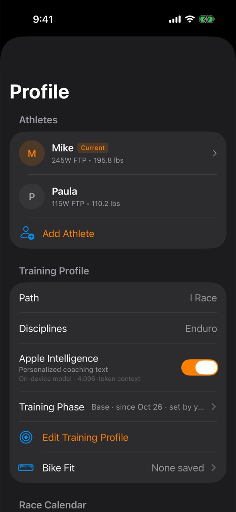
| Setting | What it does | iPhone | Mac | Apple TV | Scope |
|---|---|---|---|---|---|
| Athletes | Add, switch and delete riders. Deleting an athlete keeps the rides but no longer files them under anyone. | Athletes | Athlete Profile → Manage Athletes | Athletes | Per device list, each athlete synced |
| Name, FTP, weight, units | FTP sets every power zone and workout target; weight feeds the route physics and W/kg. Use Metric Units switches km and kg. | Tap the athlete row | Athlete Profile | Athlete Profile, FTP, Weight, Units | Per athlete |
| Max and resting heart rate | Set your heart-rate zones; estimated from age until you type them. | Athlete row → Heart Rate | Heart Rate Zones | Heart Rate | Per athlete |
| FTP test history | Every test you have ridden, with Update FTP from any of them. | FTP row | View FTP Test History | — | Per athlete |
| Training Profile | Riding style, disciplines, goals and coaching voice; Set Up or Edit Training Profile reopens the four steps. | Training Profile | Training Profile | — | Per athlete |
| Apple Intelligence | Personalized coaching text on a capable device; the session and the facts never change. | Training Profile | Training Profile | — | Per athlete |
| Training Phase | Base, Build, Recovery, Off-Season or Let TrainerKit decide, with the date the phase began. | Training Profile → Training Phase | Training Profile → Change… | — | Per athlete |
| Bike Fit | Fit numbers per smart bike, shown on the sensor screen when that bike connects. | Training Profile → Bike Fit | Training Profile → Edit… | — | Per athlete |
| Race Calendar and Training Trips | Events with priority, course and goals; trips, vacations and sick days. | Race Calendar | Race Calendar, Training Trips | — (read on Today) | Per athlete |
| Connections | Strava, Intervals.icu (API key) and Ride with GPS, each per athlete. | Connections | Athlete settings | Connected Services | Per athlete; the TV authorizes separately by QR code |
| Auto-upload completed workouts | Sends every finished ride to all connected services on Done. | Connections | Connected Services | Connected Services → Auto-Upload After Rides | Per device |
| Outdoor Rides → Default type | Automatic, Road, Mountain, Gravel or E-Bike: the fallback when nothing else decides the ride type. | Outdoor Rides | — | — | Per athlete |
| Strava Bikes | A default bike per ride type, pre-filled on the completion screen. | Strava Bikes | — | — | Per athlete |
| Volume Buttons Adjust Ride | The rocker steps intensity ±5% or grade ±1%. Off by default: AirPods presses look identical. | Ride Controls | — | — | Per device |
| Smart Bike Gear & Buttons | Read the gear and buttons of an OpenBikeControl bike. On by default, applied at the next connection. | Ride Controls | — | — | Per device |
| Power Variation | Targets oscillate inside the zone instead of holding flat; a percentage per zone, 0% off, never below 40% FTP. | Power Variation | Power Variation | Power Variation | Per device |
| Apple Health | Rides written to Health, Health belongs to (whose Health this device is), Update FTP and weight from Health. | Apple Health | — (through the iPhone) | — (through the iPhone) | Per device |
| iCloud Sync | Status, last sync, Sync Now / Push Rides to iCloud for a ride that did not travel. | iCloud Sync | iCloud Sync | — | Per device |
| Export to iCloud Calendar | Mirrors races and trips into a TrainerKit calendar; one owning device per athlete, Take Over Ownership moves it, Reset deletes and republishes. | iCloud Calendar | — | — | Per athlete, one owner |
| Surface Types | Which of the six surfaces appear in ride setup and cycle during a route. | Surface Types | Surface Types | Enabled Surfaces | Per athlete |
| Restore Default Workouts / Routes | Adds back any missing starters; nothing you made is touched. | Workout Library, Route Library | Workout Library, Route Library | Library | Per device |
| Map Page, Wet Mode | Watch only: hide the map page to save battery; lock the screen from ride start. | — | — | — | Watch home screen |
Where support lives. Settings on the Mac links to Get Help & Support; on every platform the page is trainerkitapp.com/support.html. The version number is under About.
Troubleshooting
Most trouble comes back to three facts: a sensor accepts one connection at a time, a ride is saved before you ever see it, and everything else travels through iCloud and arrives when both devices are online. Find the symptom, then the one thing to try.
| Symptom | What is usually going on | What to do |
|---|---|---|
| Trainer or sensor not in the scan list | It is asleep, or another app or device holds it | Turn the pedals or press its button, close other training apps and TrainerKit on your other devices, scan again |
| Trainer connected but resistance never changes | It is holding a workout's power (ERG), or another app still has control | Disconnect in the other app and reconnect here; in Just Ride use the grade buttons |
| A number shows dashes mid-ride | That sensor has not reported for a few seconds; the ride records it as missing rather than frozen | Move the phone or Mac into the sensor's line of sight; do not toggle Bluetooth |
| Indoor iPhone ride, no heart rate, Watch dark | The Watch app did not launch or is out of date | Read the line under the ride screen (Launching Watch app…, No Apple Watch paired, TrainerKit isn't installed on your Watch). It retries on its own. If it never connects, reinstall TrainerKit on the Watch from the Watch app on the iPhone |
| Watch ride shows no power | The meter is still connected to the iPhone, or not paired in watchOS | Close TrainerKit on the iPhone; pair the meter in Settings → Bluetooth → Health Equipment on the Watch |
| Watch ride not on the iPhone | The hand-off needs the iPhone awake and nearby | Open TrainerKit on the Watch next to the iPhone; it retries every time it opens. Still missing: Profile → iCloud Sync → Push Rides to iCloud on the iPhone, or History → Recover from Apple Health |
| Ride on one device, not another | iCloud has not caught up, or the devices use different Apple accounts | Settings → iCloud Sync → Sync Now; check both devices are signed into the same iCloud |
| Today card differs between two devices | One device has rides the other has not received yet | Sync Now on both; the cards agree once the rides match |
| Fitness, Fatigue and Form missing on launch | The ride history is still loading | Wait a few seconds; nothing is lost |
| Strava stuck on Connecting… on the Mac | Authorization opens in your default browser, not in TrainerKit | Finish the Strava page in the browser; it hands the result back to the app. If the tab was closed, Disconnect and connect again |
| Ride with GPS was connected and now is not | Ride with GPS revoked the token; there is no refresh | Connect again; routes you imported stay |
| Intervals.icu upload fails | The API key is wrong or was regenerated | Intervals.icu → Settings → Developer, copy the key, paste it under Connections |
| Ride uploaded with the wrong type or bike | The tag line was wrong when you tapped Done | Fix it in History and upload again from there; delete the first copy on the service |
| FTP changed on its own | Update FTP and weight from Health adopted a newer sample, usually the Watch's estimate | Type the FTP you want; it becomes the newest sample. Or turn the switch off under Apple Health |
| Rides land in the wrong person's Fitness app | The device holds more than one athlete | Profile → Apple Health → Health belongs to, pick the right athlete on every device |
| Outdoor ride stopped while the phone was in a pocket | iOS ended the app in the background, usually with Low Power Mode on | Turn Low Power Mode off before long rides; the ride is saved every few minutes and is recovered at the next launch |
| Watch battery drains on a long ride | The map page is drawing the whole track every second | Turn Map Page off on the Watch home screen; Low Power Mode hides it by itself |
| Distance differs from a friend's device | Every device measures a ride differently; TrainerKit keeps the larger of its two measurements | Nothing to do; a few percent between devices is normal |
| A deleted race or trip comes back | Another device had not received the deletion | Sync Now on that device, then delete it there |
| Calendar export does nothing | Calendar permission was refused, or another device owns the export | Settings → TrainerKit → Calendars, allow, then turn the switch on again; or Take Over Ownership on this device |
| Apple TV cannot find the trainer | Your iPhone or Mac still holds it | Close TrainerKit there, then Connect Sensors → Scan for Devices again |
| Apple TV Strava code rejected | The code was copied from the wrong page or has expired | Scan the QR code again and copy the code from the confirmation page it lands on |
Still stuck. The support page at trainerkitapp.com/support.html takes the details: which device, what the screen said, and roughly when. A screenshot of the ride screen or the sensor screen answers most questions first time.
Something not covered?
Email mike@trainerkitapp.com or see the support page.